东方符斗祭
(aka. THBattle, THB)
很高兴你能知道这个游戏并且感兴趣！ 简要的说，东方符斗祭是一个以东方为背景的三国杀游戏， 其中有部分角色直接复刻了三国杀原作的设定，大部分角色是自己制作设定的。 感兴趣的话你也可以参与~
按一下“F”键可以全屏观看～
官方网站
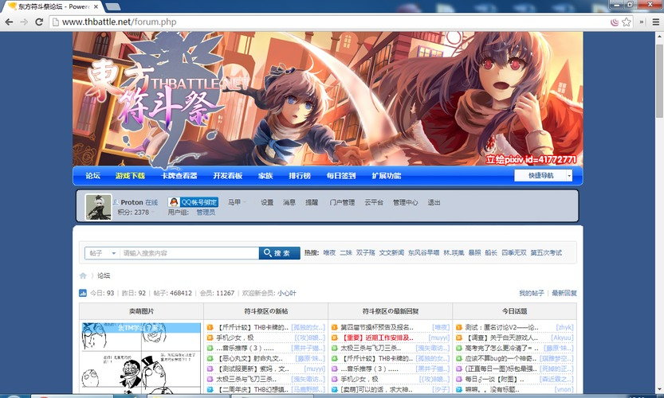官方网站

在官网上可以直接看到游戏的在线情况~
账号注册
因为游戏和论坛的账号是互通的，注册一个论坛账号就可以进行游戏了。 有一点需要注意，如果使用QQ的快速注册功能，你需要设定一个论坛密码， 进入游戏的时候需要输入论坛密码才可以。
『文々。新闻』
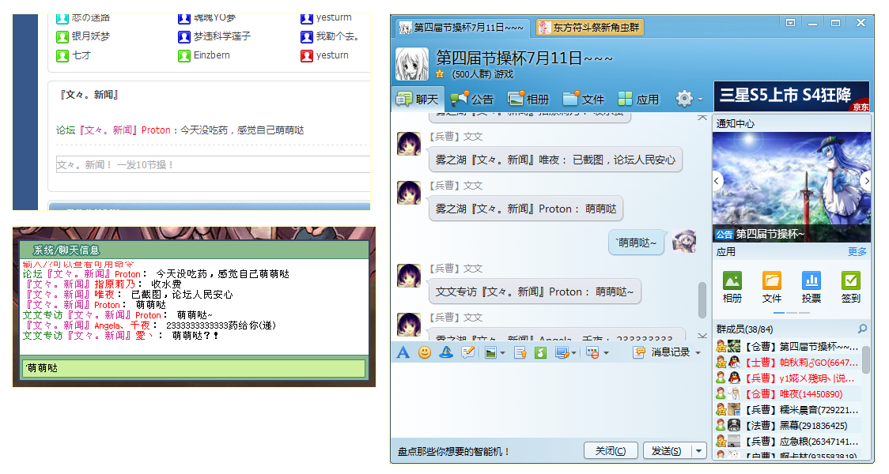游戏、论坛和QQ群之间有文文新闻。只需要10节操，你说的话就会在3个地方同时出现。 在QQ群和游戏中发送文文新闻需要在说的话之前加入“`”符号（在1的左边），论坛上不需要。
下载游戏
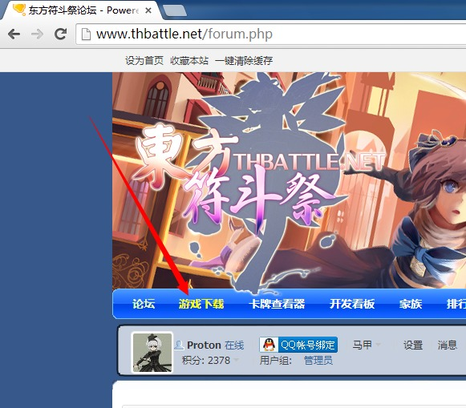按照图片上的位置下载，或者直接戳这里。 下载下来以后请用解压软件（推荐WinRAR）解压。
打开游戏
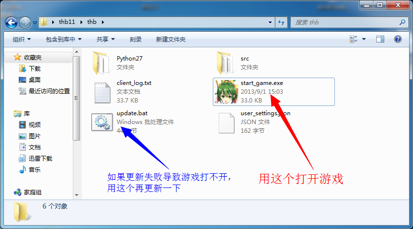选择服务器
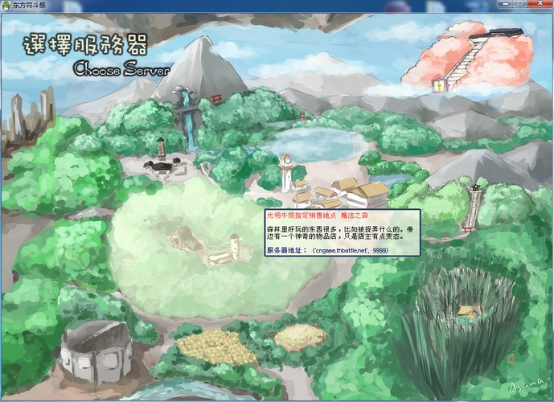其实现在只有一个服务器了，点这个就对了
登陆
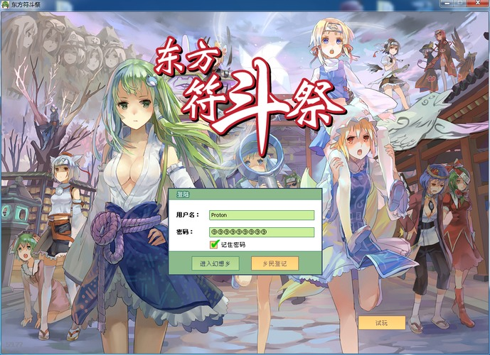输入你的论坛账号和密码。 记得前面提到过，使用QQ注册的需要设置论坛密码么？ 当然你也可以点右下角的试玩，不过邀请和文文新闻功能是不能用的。
游戏大厅
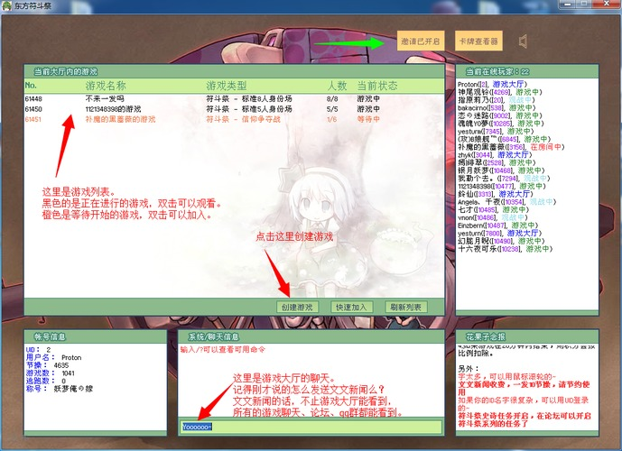创建游戏
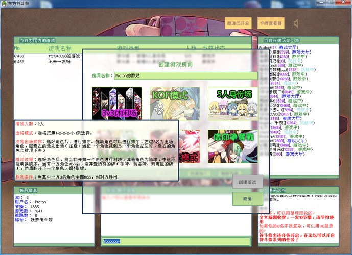鼠标移动到图片上有详细说明， 或者你也可以去 http://thb.io 看。 这是THB的卡牌公式站，所有卡牌、人物、模式都可以查阅到。
KOF模式
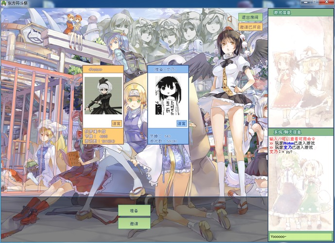我建立了一个KOF模式的游戏。 这时有人加入了。
邀请游戏
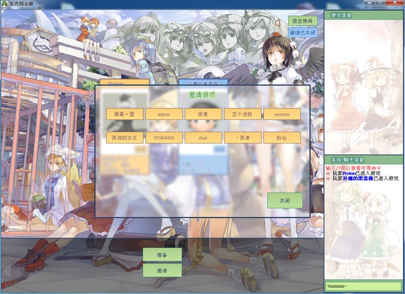如果其他人都在挂机或者观战，可以通过邀请功能邀请
开始游戏
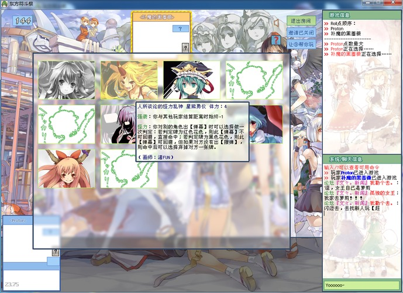当所有人都准备的时候，游戏就开始了。 这时是KOF模式的选人界面，鼠标移到人物头像上可以查看说明。
调整人物出场顺序
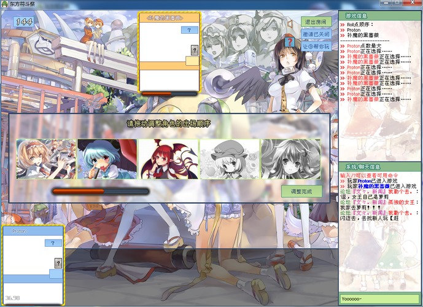发动卡牌的操作

发动卡牌！
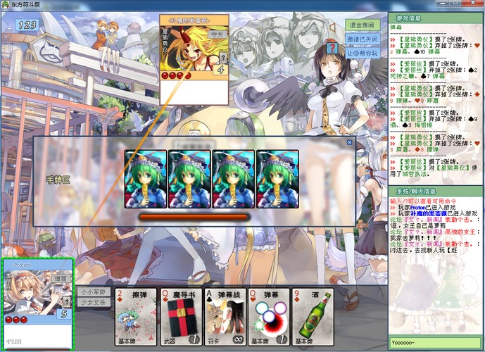刚刚入门不会玩，怎么办? 可以去观战！看看触手们是怎么玩的！ 触手之路的第一步！ 记得刚才说的吗，双击已经开始的游戏就可以观战了。
卡牌公式站
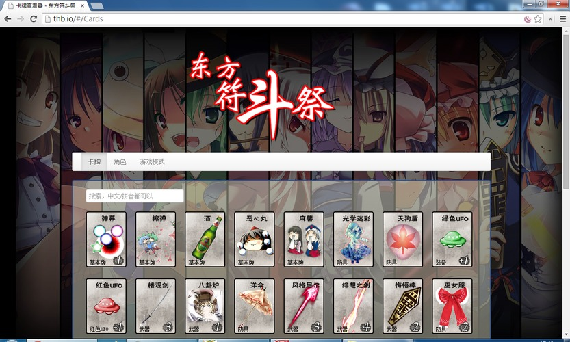点击图片可以跳转。 这里有所有卡牌、人物和游戏模式的说明。 很重要所以再说一遍！
游戏崩溃啦(|||ﾟДﾟ)

最常见的问题有两种：
- 游戏更新了一半死掉了
- 需要更新显卡驱动
紧急更新
在 这一页 提到过， 运行游戏目录中的update.bat，更新完成以后再打开游戏。
更新显卡驱动（nVIDIA）
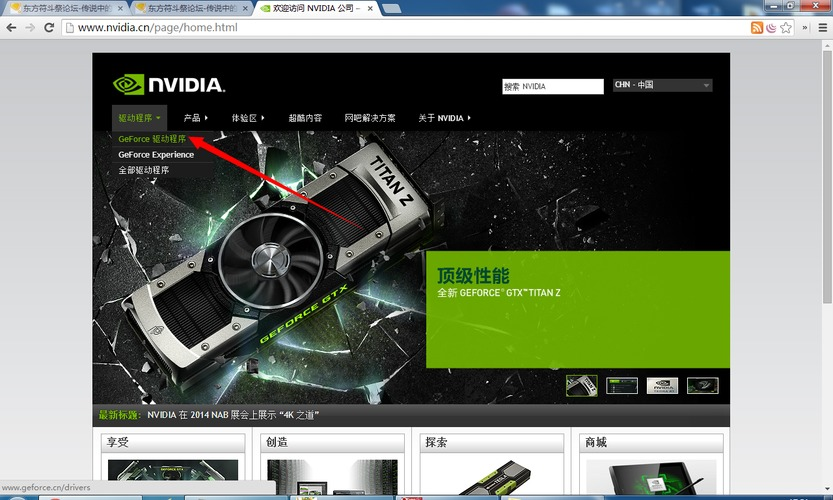更新显卡驱动（AMD）
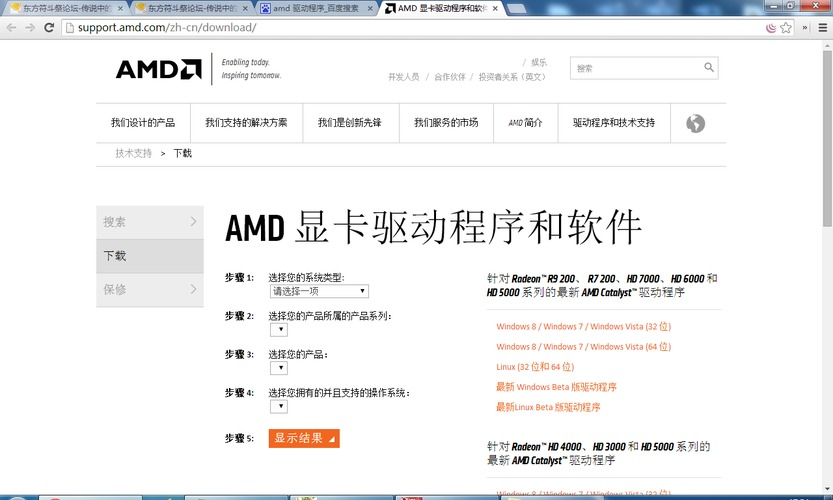结束
如果觉得好玩，请推荐给身边的人哦~